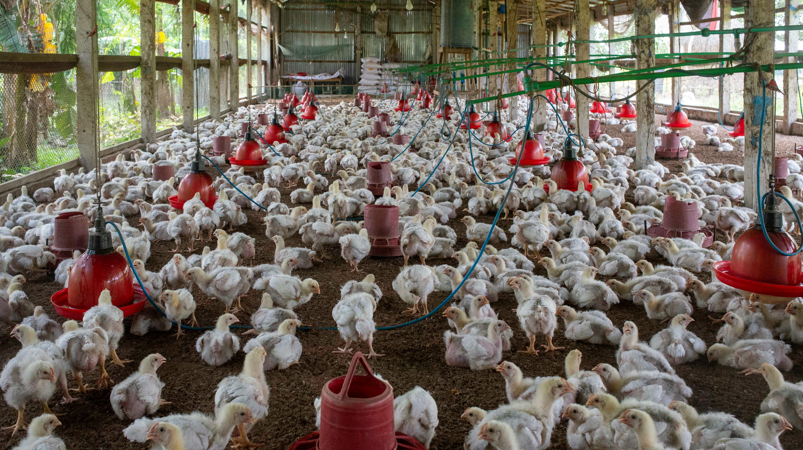
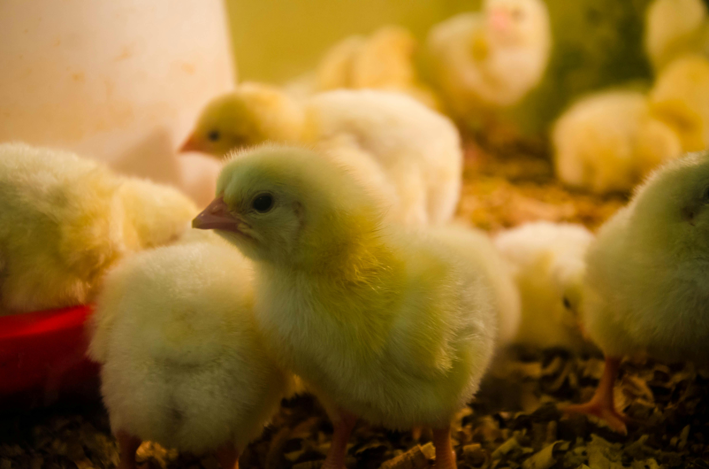
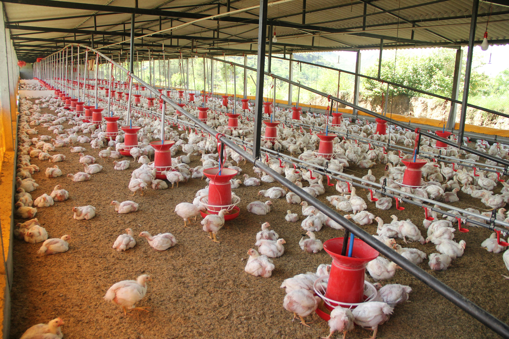
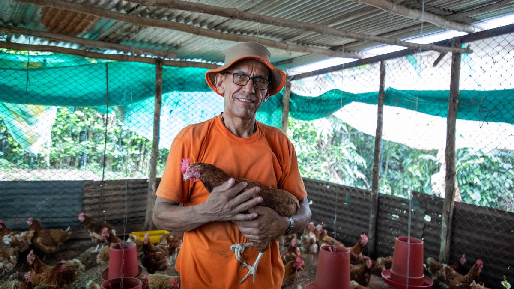
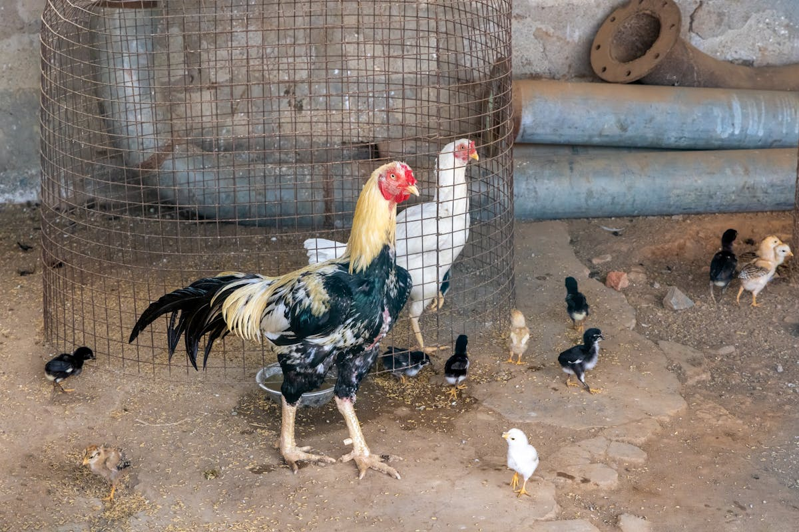
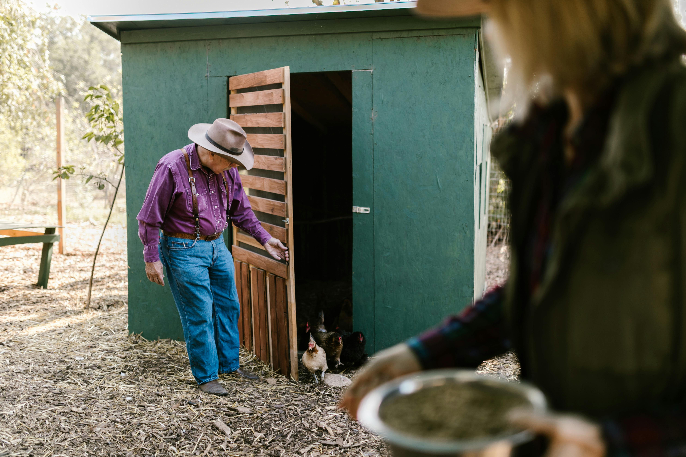

01
Sales
Chicks, feed, medicine, and broiler support aligned to farm operating needs.
Poultry Supply and Integration
Poultry Supply and Integration
Utsav Feed Industries delivers chicks, feed, medicine, broiler support, integration services, equipment coordination, and vaccine-linked support with a clear on-ground presence in Korba, Champa, Jaijaipur, and Bilaspur.
Active farms supported through the current network.
Current capacity managed across operating districts.
Korba, Champa, Jaijaipur, and Bilaspur.

01
Chicks, feed, medicine, and broiler support aligned to farm operating needs.
02
Poultry equipment support and vaccine-linked coordination for farm continuity.
03
Operating with digitally managed workflows for better visibility, coordination, and control.
What We Do
The business combines poultry supply with integration-oriented support across chicks, feed, medicine, broiler, equipment, and vaccine-linked requirements.

Chick Supply
Reliable sourcing and movement support for ongoing farm cycles.

Feed Supply
Structured movement of feed linked to daily farm operations and batch needs.

Medicine Support
Medicine-linked support for active farms requiring responsive day-to-day coordination.

Broiler Supply
Broiler-related supply and operating coordination for farms across the active belt.

Poultry Equipment
Practical coordination around poultry equipment needs tied to farm operations.

Vaccine Support
Support for vaccine-related farm requirements as part of the integration model.
Why The Model Works
Premium poultry companies do not present themselves only as sellers of products. They position themselves as operating partners with field discipline, supply confidence, and the ability to support growth over time. That is the direction this business is built to communicate.
Input movement that supports farm continuity instead of fragmented sourcing.
Better response and relationship-building across active operating districts.
Equipment, vaccine, and operational coordination beyond basic product dispatch.
A business image that can scale into larger partnerships and institutional clients.
Technology-Led Operations
Alongside supply and integration support, Utsav Feed Industries is strengthening its operating model through digital systems that improve farm coordination, field activity tracking, feed and medicine visibility, batch records, and management reporting.
Better tracking of farms, batches, feed movement, medicine records, and field activities across the network.
A structured digital system for company teams, field staff, and farmers to work in a more connected way.
Software-backed operations help the company scale with more discipline, reporting, and process control over time.
Digital Capabilities
Digital operations support the day-to-day needs of the business across farmers, field teams, supply movement, and management visibility.
Structured records for farms, sheds, and farmer-linked operational data.
Visibility into active batches, mortality, growth, and flock movement.
Better control over feed inward, stock movement, medicine support, and usage.
Improved coordination between company staff, farms, and on-ground activities.
Clearer performance visibility, operational reporting, and business review support.
A stronger operating model for scaling the business with more consistency and control.
Operating Footprint
Utsav Feed Industries currently operates across Korba, Champa, Jaijaipur, and Bilaspur, supporting an active network of poultry farms through supply and integration-oriented coordination.
Partner With Us
Connect with our team to discuss supply requirements, farm coordination, or business enquiries.